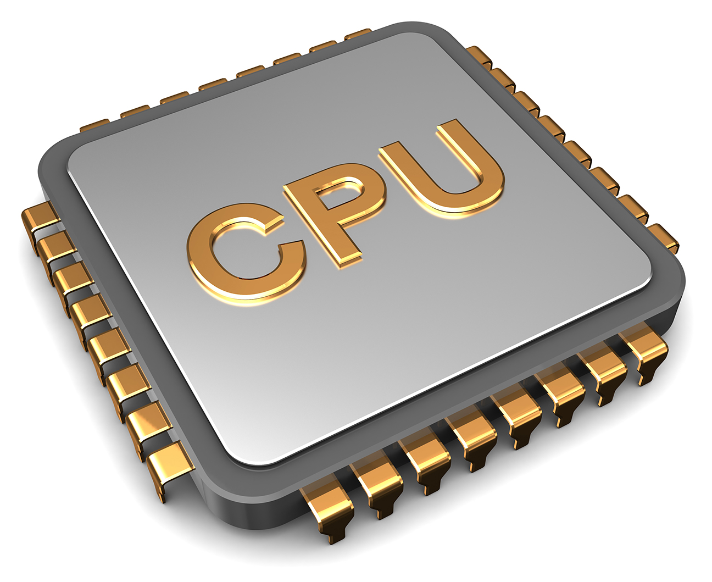

หน่วยประมวลผล
หน่วยประมวลผลกลาง (อังกฤษ: central processing unit) หรือย่อว่า ซีพียู (CPU) เป็นวงจรอิเลคทรอนิกส์ที่ทำงาน หรือประมวลผล ตามชุดของคำสั่งเครื่องจากซอฟต์แวร์ คำนี้เริ่มใช้ในอุตสาหกรรมคอมพิวเตอร์ตั้งแต่ต้นศตวรรษ 1960
หน่วยประมวลผลเปรียบเสมือนเป็นสมองของคอมพิวเตอร์ ในการทำหน้าที่ตัดสินใจหรือคำนวณ จากคำสั่งที่ได้รับมา เช่น การเปรียบเทียบ การกระทำการทางคณิตศาสตร์ ฯลฯ
โดยมีกระบวนการพื้นฐานคือ
สถาปัตยกรรมของหน่วยประมวลผลกลาง ประกอบไปด้วย ส่วนควบคุมการประมวลผล (control unit) และ ส่วนประมวลผล (execution unit) และจะเก็บข้อมูลระหว่างการคำนวณ ไว้ในระบบเรจิสเตอร์
การทำงานของหน่วยประมวลผลกลางแบ่งออกตามหน้าที่ได้เป็นห้ากลุ่มใหญ่ ๆ ดังนี้ โดยทำงานทีละคำสั่ง จากคำสั่งที่เรียงลำดับกันไว้ตอนที่เขียนโปรแกรม
L3 Cache - รอคำสั่งระหว่างกระบวนการกำลังประมวลผล*Write Back - การเขียนข้อมูลกลับ โดยมีหน่วยจำ Register ช่วยเก็บที่อยู่ของคำสั่งต่อไป ภายหลังมีคำสั่งกระโดดบวกลบที่อย
ู่
|  |
|---|